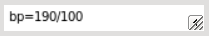
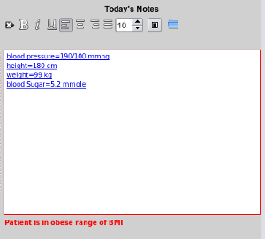

Measurements end up in EasyGP in one of two ways
1) By Adding a Measurement in the Progress Notes Editor
Certain common letter combinations will tell the notes editor to treat the text following the = (equal) sign as
a measurement:

However, this text will not be recognised as a measurment
until there is a space character after the last numerical value. As soon as that occurs the editor parser will convert the text into html, and even prompt you with some basic
information as in this next picture when it has figured out the patient is obese:

bp=190/100
h=180
w=99
bsl=5.2
inr=2.3
When the clinical record is saved, the measurements are converted to numerical values and are later available for
graphing.
If you swipe, or backspace over the measurement it will be removed.
2) By Importing a measurement as a result from HL7
In essence what this means is that even something like the red cell volume for your patient over time could
exist in the database and can be retrieved for graphing!